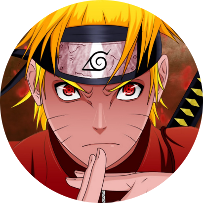

|  | UZUMAKI NARUTOThe Hero Of World. Naruto (Japanese: NARUTO ナルト ) is a Japanese manga series written and illustrated by Masashi Kishimoto. It tells the story of Naruto Uzumaki, a young ninja who seeks recognition from his peers and dreams of becoming the Hokage, the leader of his village. |
Naruto is one of the most powerful anime characters of all time, so we're taking a look at 15 of his craziest powers and ranking them!
| Rasingan | ★★★★ | Sage mod | ★★★★ |
|---|---|---|---|
| Kagenoseno jistsu | ★★★★ | paralise jistsu | ★★ |